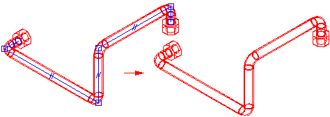
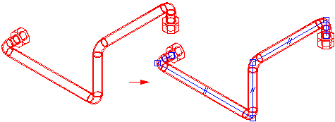

Managing path display
When working with tube parts, it is often useful to manage the path display. Solid Edge makes it easy to hide and display the part paths so you can work more efficiently. To hide a tube path, right-click the tube part containing the path and click Hide Path on the shortcut menu.

To display a hidden path, right-click the part containing the path and click Show Path on the shortcut menu.

Displaying tube centerlines
When you place tube parts in a draft document, you can display the tube centerlines in the drawing view. To display the centerlines, on the Annotation tab of the View Properties dialog box, select Show Centerlines.